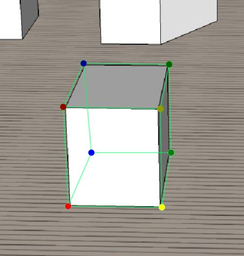

Fast Start
How to Add Box Proxy?
- Press "Add Box Proxy" Button.
- Adjust the Top face of Box.
- Press "Action Done Button " and Adjust the Bottom face of Box.
- Select an tag.
- Press "Action Done" Button to lock proxy.
How to Add Space Corner?
- Press "Add Space Proxy" Button.
- Adjust four dots to fit walls and floor.
- Press "Action Done" Button to lock proxy.
How to delete proxy?
- Press "Save proxy button" to enter delete selection mode.
- Move to proxy and left click to delete object.
- Press Action Done Button to leave delete mode.
How to save annotation result?
- Press "Save Button" to save and leave.
Notices
Keep Box Orientation Consistent
The Red dots should alway be placed on left side.
Keep Edges Parallel
Just keep box proxy looks rigid. No need very accurate alignment.
